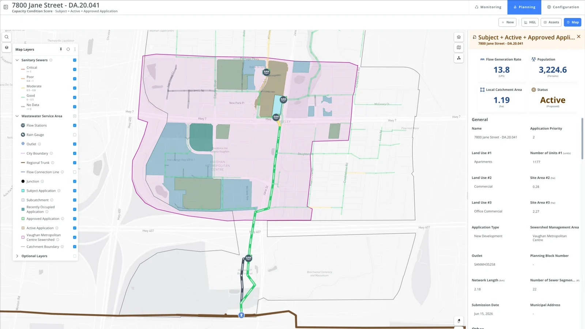
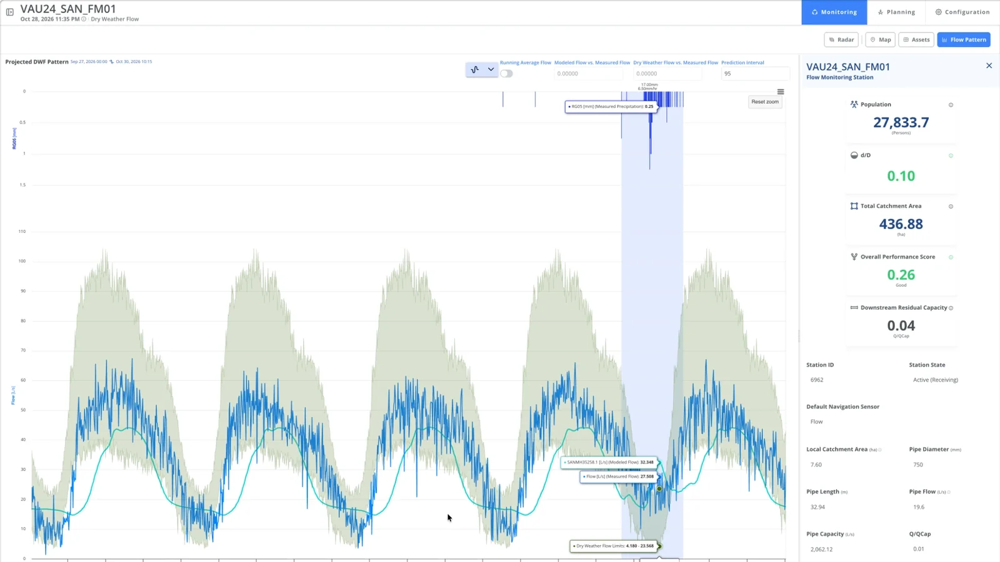
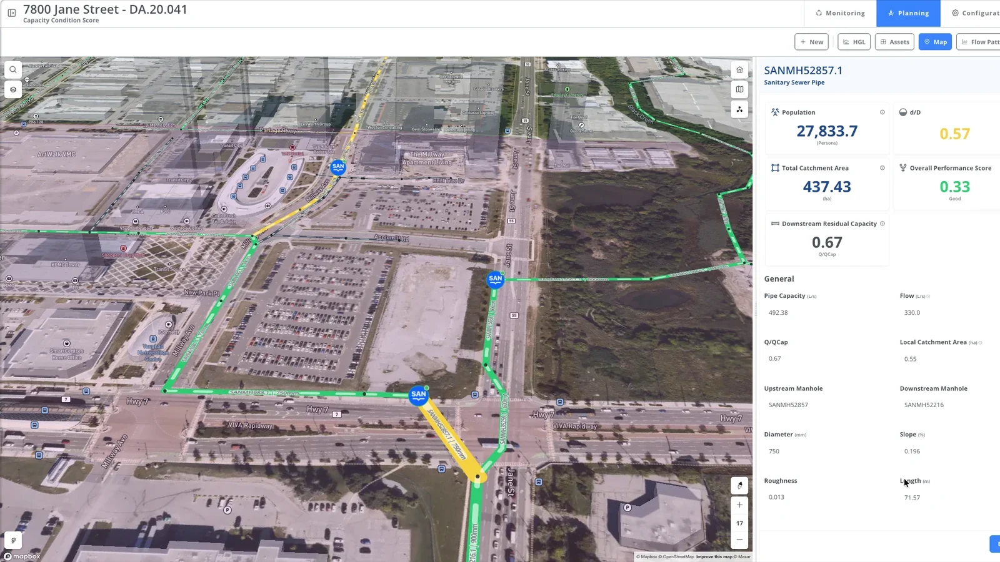

Growth outruns answers.
Months per servicing approval, several iterations each.
Sanitary Sewer Condition Assessment Platform
Know your collection system hydraulic capacity and asset conditions and make planning decisions with confidence.
The Problem
Months per servicing approval, several iterations each.
Inspections paid for, not referenced for planning.
Regulatory, customer service, and budget submissions built by hand.
Flow monitoring data, CCTV inspection records, hydraulic model, and development applications in separate workflows and reconciled manually.
Traditional sewer asset management often does not consider historical and potential flow capacity.
SSCAP puts sewer condition, capacity, and growth on one map, analyzed against the system's real data.



We bring in your existing model, monitoring, inspections, and development applications.
Measured flow checks the picture continuously. Anything outside the prediction band is flagged, not hidden.
SSCAP runs beside your current process. Our engineers work with you to stay with you.
SSCAP is more than a product. It's an expertly managed service.
Proven implementation in major Ontario municipalities.
Built for growing municipalities. Built for municipalities that require answers about their sewer system.
Smart City Water · Proudly Made and Operated in Ontario · Creators of Visual OTTHYMO and DataCurrent
Current and predictive sanitary asset management.
Taking into account condition assessment and residual capacity.
Both dry weather and wet weather flow.
We are happy to come to you.
Calendar not showing? Open the booking calendar in a new tab ↗
FAQ
If you don't have a model, our expert modelling team is able to assist you.
InfoWorks ICM network imports and EPA SWMM / VO SWMM models, plus GIS layers (Shapefile / GeoJSON) and CCTV / NASSCO PACP inspection exports.
They are shown grey and unscored, never as "good". OACS is only calculated where PACP-scored inspection data exists.
We help you do it. Our team works with you to present SSCAP to council and the people who approve the budget in plain, non-technical language: what the map shows, what is at risk, and what the decision is. Ask about council support when you book your demo.